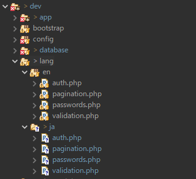

Laravel9のインストールと初期設定 | Laravel10にも対応
Laravel10とLaravel9のインストール手順はだいたい同じインストールの概要
Composerを利用してインストールしなければならないようだ。また、コマンドラインで初期設定がいろいろ必要である。
前提条件
- Windows10
- xampp(PHP8.0以上に対応しているもの)
- コマンドラインツールにGitBash（Git for windowsに含まれるツール）を利用。
- GitBashでnpmコマンドが使えるようにしてあること。
- GitBashでphpコマンドが使えるようにしてあること。
手順
-
npmをバージョンアップしておくこと。
npmのバージョン確認npm --version
npmをバージョンアップ$ npm install -g npm
-
Windows10に新しくxamppをインストールしたばかりなら、php_intlを有効にする必要がある。
php.iniを開き、下記のパラメータを有効にする。(「;」をはずす)
extension=intl
extension=gd

php.iniを変更したらApacheの再起動を忘れぬように。
-
GitBashを起動。
任意のプロジェクトを作成し、cdコマンドでそのプロジェクトの場所まで移動する。
今回の手順例では,プロジェクト名を「crud_base_laravel9」としている。$ cd ~/git/crud_base_laravel9
-
Windows環境だとttyなんとかのエラーがよく出るため、それ防止用に下記コマンドを実行。
$ exec winpty bash
-
composer.pharをダウンロードする
$ php -r "readfile('https://getcomposer.org/installer');" | php -
Laravel9をインストール
$ php composer.phar create-project "laravel/laravel=9.1.*" dev
補足1
補足2 -
localhost環境(開発環境)でシンボリックリンクを作成する。
「C:\xampp\htdocs」配下に直接プロジェクトを作成しているならこの処理は不要。
手順
Windows Power Shellを管理者として実行する。（Windows Power Shellのアイコン右クリック→管理者として実行」
下記コマンドでシンボリックリンクを作成する。
cmd /c mklink /D C:\xampp\htdocs\crud_base_laravel9 C:\Users\user\git\crud_base_laravel9
-
ブラウザにて「http://localhost/crud_base_laravel9/dev/public/」にアクセスし、エラーがでずにページが表示されたらとりあえずOK.

-
xamppでphpMyAdminを起動し、新しくデータベースを作成する。
照合順序は「utf8mb4_general_ci」を推奨。
テーブルは作成しなくてよい。後ほど、マイグレーションでいくつかテーブルを自動生成する。
例ではcrud_base_laravel9というデータベース名でデータベースを作成した。
-
DB設定をする。「.env」ファイルを開き、以下のような記述に書き換える。
DB_CONNECTION=mysql DB_HOST=localhost DB_PORT=3306 DB_DATABASE=crud_base_laravel9 DB_USERNAME=root DB_PASSWORD=
セッションの保存先をfileからdatabaseに変更する。ファイルでなくDBにセッション情報が保存されるようになる。SESSION_DRIVER=database
-
続いていくつかの初期設定をする。
再びGitBashに戻り、devディレクトリに移動する。$ cd dev
-
devディレクトリ内にcomposer.pharを用意します。
既にdevディレクトリ内にはLaravelが用意したcomposer.pharがありますが、不具合が疑われます。
なので以下のコマンドなどで最新のcomposer.pharを用意します。
$ php -r "readfile('https://getcomposer.org/installer');" | php -
ログインフォームなど使えるようにするため、composerで下記をインストールする。
$ php composer.phar require laravel/ui
※2023年5月、laravel10.2.2では以下の方法だと正常にインストールされてない不具合があった。composer.pharを最新にし、上記のコマンドで実行すると上手くいった。
$ composer require laravel/ui
参考：ログイン画面を作成(Laravel7版) -
下記のコマンドを実行し、ログイン画面関連のファイルを自動作成する。
php artisan ui vue --auth
-
sessionsテーブルを作成するために必要なコマンド。（マイグレーション情報に追加？）
$ php artisan session:table
-
マイグレーションを実行する。DBに最低限必要なテーブルをいくつか自動生成する。
$ php artisan migrate
-
続いてjsとcssまわり。
package.jsonをみると分かるが,Booststrap5, vue2.6のインストール準備ができているようだ。jQueryも恐らくBooststrap5に含まれている。
本来、下記コマンドでBootstrapとVueを追加設定するが恐らく不要。$ php artisan ui bootstrap
$ php artisan ui vue
-
jsおよびcssのインストールおよびビルド。
この辺りはエラーが頻発しやすい。私はここで大いにハマってしまった。 結局はlaravelのバージョン選びで失敗していたことが分かった。 どうしようもないエラーに遭ったらPackagestで安定版のLaravelバージョンを探してインストールをやりなおそう。
インストール。npm install
node_modulesディレクトリが作成され、様々なパッケージがこのディレクトリにインストールされる。
-
インストールしたパッケージをビルドする
npm run build
app.jsとapp.cssを生成する。Laravel10の場合、以下のファイルが出来上がる。public/build/manifest.json 0.26 kB │ gzip: 0.14 kB public/build/assets/app-3ea8b221.css 191.52 kB │ gzip: 27.24 kB public/build/assets/app-2c989934.js 249.17 kB │ gzip: 88.84 kB
-
インストールしたパッケージをビルドするして,app.jsとapp.cssを生成する。
npm run dev
環境構築が目的なら、今は実行する必要がないコマンド。
このコマンドを実行すると、js,cssを自動でコンパイルするツールである「Vite」が起動状態になる。
Viteは常にファイルの状態を検知しているようで、「~/dev/resources/」ディレクトリ内のjsファイルやcssファイルを開発者が変更したり、設定系のphpファイルを変更すると勝手にコンパイルしてくれるようである。
「npm run dev」を実行したら、あとはコマンドラインツールごと常時放置状態にするという使い方をする。 開発者がソースコードを編集すると、コマンドラインツール上で動作しているViteもなんらかの仕事をしているのが、コマンドラインツール上で確認できる。
フロントエンドの開発時には便利そうなので、「npm run dev」コマンドでViteを起動して置くと良い。
-
再びブラウザにて「http://localhost/crud_base_laravel9/dev/public/」にアクセスし、画面右上のRegstryをクリック。
ログインフォームが表示されるので、画面右上のRegstryから適当にユーザー登録する。
なお、レイアウトが崩れているなら、上記の「jsおよびcssのインストールおよびビルド」に失敗している。

- バリデーションのメッセージなど各種メッセージの日本語化 | 日本タイムゾーン(日本時間)
-
追記：DBテーブルのフィールド型がdatetime型だと空値で苦しむことになる。
対策→Larevelの日付更新エラー SQLSTATE[22007]: Invalid datetime format Larevelの日付更新エラー
Laravelの従う | なぜSPAでなくMPAか | 基本アクション
現在はSPA型の管理画面が主流だと思っていた。しかしSPA型は高レベルのプログラマーを雇わねばならない弱点がある。なので時代に逆行するが、保守を考えMPA型を選択しなければならない事情がある。
SPA型ではindexアクションとajax用のアクションをコントローラクラスに用意するだけでよし。 しかし、MPA型である場合、複数のアクションが必要になる。
アクション名は好きな名前できるが、どうやらLaravelには推奨されているお決まりのアクション名が存在するようだ。
アクション
| アクション名 | 説明 |
|---|---|
| index |
基本中の基本、一覧表示画面する。大抵は検索閲覧型の一覧画面になるため検索データの取り扱いが必要になる。 indexアクション内の基本的流れ
|
| create |
新規入力画面を表示するだけ。新規入力画面はいわゆる新規入力フォームのことだ。 新規入力ボタンや複製ボタンがこのアクションのトリガーになる。 複製機能も実装するならこのアクションが該当するな。 |
| store |
新規登録アクションになる。 新規入力画面の登録ボタンを押したときのアクションだ。 このアクションでは新規入力フォームに入力されたデータをDB保存する処理が行われる。 バリデーションは重要だ。 入力エラーがあったらDB登録せず、エラーメッセージと共に新規入力フォームを再表示。 入力に問題がなければDB登録を実行、そして一覧画面または詳細画面にリダイレクトで移動する。 |
| show | いわゆる詳細表示画面のことだ。 一覧の行にある詳細ボタンがトリガーになることがある。 入力確認画面もshowアクションに含まれるかな？まあ、別のアクション名にしたほうがいいだろうが。 |
| edit | 編集画面を表示するアクション。 一覧画面の各行に紐づく編集ボタンがトリガーになるだろう。 |
| update |
いわゆる変更登録アクション。 編集画面の変更ボタンがトリガーになる。 編集画面の入力フォームに入力されたデータをDBに登録する処理になる。 追加か変更かという違いだけで基本は新規入力画面と同じ。 |
| destroy | 削除アクションだ。 削除フラグをONにするだけとDBから消去するパターンが考えるが、destroyの意味を考えるとDBからの消去かな。 削除フラグは単にdeleteアクションとしたほうがいいかも 一覧行や詳細表示画面の抹消ボタンがトリガーになる。 |
| delete | 削除フラグをONにする削除用に。 公式推奨ではないがよくあるアクション名。 一覧行や詳細表示画面の削除ボタンがトリガーになる。 |
バリデーションのメッセージなど各種メッセージの日本語化 | 日本タイムゾーン(日本時間)
-
ルート/config/app.phpを開き、下記のように書き換える。
'timezone' => 'Asia/Tokyo', 'locale' => 'ja', -
ルート/langディレクトリにあるenフォルダをそのままコピーしてjaというフォルダ名にする。
 -
jaフォルダ内のvalidation.phpファイルを開き、以下の通りに書き換える。
validation.php
公式を参考<?php return [ /* |-------------------------------------------------------------------------- | バリデーション言語行 |-------------------------------------------------------------------------- | | 以下の言語行はバリデタークラスにより使用されるデフォルトのエラー | メッセージです。サイズルールのようにいくつかのバリデーションを | 持っているものもあります。メッセージはご自由に調整してください。 | */ 'accepted' => ':attributeを承認してください。', 'accepted_if' => ':otherが:valueの場合、:attributeを承認してください。', 'active_url' => ':attributeが有効なURLではありません。', 'after' => ':attributeには、:dateより後の日付を指定してください。', 'after_or_equal' => ':attributeには、:date以降の日付を指定してください。', 'alpha' => ':attributeはアルファベットのみがご利用できます。', 'alpha_dash' => ':attributeはアルファベットとダッシュ(-)及び下線(_)がご利用できます。', 'alpha_num' => ':attributeはアルファベット数字がご利用できます。', 'array' => ':attributeは配列でなくてはなりません。', 'before' => ':attributeには、:dateより前の日付をご利用ください。', 'before_or_equal' => ':attributeには、:date以前の日付をご利用ください。', 'between' => [ 'numeric' => ':attributeは、:minから:maxの間で指定してください。', 'file' => ':attributeは、:min kBから、:max kBの間で指定してください。', 'string' => ':attributeは、:min文字から、:max文字の間で指定してください。', 'array' => ':attributeは、:min個から:max個の間で指定してください。', ], 'boolean' => ':attributeは、trueかfalseを指定してください。', 'confirmed' => ':attributeと、確認フィールドとが、一致していません。', 'current_password' => 'パスワードが正しくありません。', 'date' => ':attributeには有効な日付を指定してください。', 'date_equals' => ':attributeには、:dateと同じ日付けを指定してください。', 'date_format' => ':attributeは:format形式で指定してください。', 'different' => ':attributeと:otherには、異なった内容を指定してください。', 'digits' => ':attributeは:digits桁で指定してください。', 'digits_between' => ':attributeは:min桁から:max桁の間で指定してください。', 'dimensions' => ':attributeの図形サイズが正しくありません。', 'distinct' => ':attributeには異なった値を指定してください。', 'email' => ':attributeには、有効なメールアドレスを指定してください。', 'ends_with' => ':attributeには、:valuesのどれかで終わる値を指定してください。', 'exists' => '選択された:attributeは正しくありません。', 'file' => ':attributeにはファイルを指定してください。', 'filled' => ':attributeに値を指定してください。', 'gt' => [ 'numeric' => ':attributeには、:valueより大きな値を指定してください。', 'file' => ':attributeには、:value kBより大きなファイルを指定してください。', 'string' => ':attributeは、:value文字より長く指定してください。', 'array' => ':attributeには、:value個より多くのアイテムを指定してください。', ], 'gte' => [ 'numeric' => ':attributeには、:value以上の値を指定してください。', 'file' => ':attributeには、:value kB以上のファイルを指定してください。', 'string' => ':attributeは、:value文字以上で指定してください。', 'array' => ':attributeには、:value個以上のアイテムを指定してください。', ], 'image' => ':attributeには画像ファイルを指定してください。', 'in' => '選択された:attributeは正しくありません。', 'in_array' => ':attributeには:otherの値を指定してください。', 'integer' => ':attributeは整数で指定してください。', 'ip' => ':attributeには、有効なIPアドレスを指定してください。', 'ipv4' => ':attributeには、有効なIPv4アドレスを指定してください。', 'ipv6' => ':attributeには、有効なIPv6アドレスを指定してください。', 'json' => ':attributeには、有効なJSON文字列を指定してください。', 'lt' => [ 'numeric' => ':attributeには、:valueより小さな値を指定してください。', 'file' => ':attributeには、:value kBより小さなファイルを指定してください。', 'string' => ':attributeは、:value文字より短く指定してください。', 'array' => ':attributeには、:value個より少ないアイテムを指定してください。', ], 'lte' => [ 'numeric' => ':attributeには、:value以下の値を指定してください。', 'file' => ':attributeには、:value kB以下のファイルを指定してください。', 'string' => ':attributeは、:value文字以下で指定してください。', 'array' => ':attributeには、:value個以下のアイテムを指定してください。', ], 'max' => [ 'numeric' => ':attributeには、:max以下の数字を指定してください。', 'file' => ':attributeには、:max kB以下のファイルを指定してください。', 'string' => ':attributeは、:max文字以下で指定してください。', 'array' => ':attributeは:max個以下指定してください。', ], 'mimes' => ':attributeには:valuesタイプのファイルを指定してください。', 'mimetypes' => ':attributeには:valuesタイプのファイルを指定してください。', 'min' => [ 'numeric' => ':attributeには、:min以上の数字を指定してください。', 'file' => ':attributeには、:min kB以上のファイルを指定してください。', 'string' => ':attributeは、:min文字以上で指定してください。', 'array' => ':attributeは:min個以上指定してください。', ], 'multiple_of' => ':attributeには、:valueの倍数を指定してください。', 'not_in' => '選択された:attributeは正しくありません。', 'not_regex' => ':attributeの形式が正しくありません。', 'numeric' => ':attributeには、数字を指定してください。', 'password' => '正しいパスワードを指定してください。', 'present' => ':attributeが存在していません。', 'regex' => ':attributeに正しい形式を指定してください。', 'required' => ':attributeは必ず指定してください。', 'required_if' => ':otherが:valueの場合、:attributeも指定してください。', 'required_unless' => ':otherが:valuesでない場合、:attributeを指定してください。', 'required_with' => ':valuesを指定する場合は、:attributeも指定してください。', 'required_with_all' => ':valuesを指定する場合は、:attributeも指定してください。', 'required_without' => ':valuesを指定しない場合は、:attributeを指定してください。', 'required_without_all' => ':valuesのどれも指定しない場合は、:attributeを指定してください。', 'prohibited' => ':attributeは入力禁止です。', 'prohibited_if' => ':otherが:valueの場合、:attributeは入力禁止です。', 'prohibited_unless' => ':otherが:valueでない場合、:attributeは入力禁止です。', 'prohibits' => 'attributeは:otherの入力を禁じています。', 'same' => ':attributeと:otherには同じ値を指定してください。', 'size' => [ 'numeric' => ':attributeは:sizeを指定してください。', 'file' => ':attributeのファイルは、:sizeキロバイトでなくてはなりません。', 'string' => ':attributeは:size文字で指定してください。', 'array' => ':attributeは:size個指定してください。', ], 'starts_with' => ':attributeには、:valuesのどれかで始まる値を指定してください。', 'string' => ':attributeは文字列を指定してください。', 'timezone' => ':attributeには、有効なゾーンを指定してください。', 'unique' => ':attributeの値は既に存在しています。', 'uploaded' => ':attributeのアップロードに失敗しました。', 'url' => ':attributeに正しい形式を指定してください。', 'uuid' => ':attributeに有効なUUIDを指定してください。', /* |-------------------------------------------------------------------------- | Custom バリデーション言語行 |-------------------------------------------------------------------------- | | "属性.ルール"の規約でキーを指定することでカスタムバリデーション | メッセージを定義できます。指定した属性ルールに対する特定の | カスタム言語行を手早く指定できます。 | */ 'custom' => [ '属性名' => [ 'ルール名' => 'カスタムメッセージ', ], ], /* |-------------------------------------------------------------------------- | カスタムバリデーション属性名 |-------------------------------------------------------------------------- | | 以下の言語行は、例えば"email"の代わりに「メールアドレス」のように、 | 読み手にフレンドリーな表現でプレースホルダーを置き換えるために指定する | 言語行です。これはメッセージをよりきれいに表示するために役に立ちます。 | */ 'attributes' => [], ]; -
jaフォルダ内にはvalidation.php以外にもauth.php, pagination.php, passwords.phpがあるが同様な方法で日本語化しておくとよい。
参考
https://readouble.com/laravel/9.x/ja/auth-php.html
https://readouble.com/laravel/9.x/ja/passwords-php.html
ログアウトの実装
任意のコントローラにログアウト処理を記述する。
class NekoController extends Controller{
/**
* ユーザーをアプリケーションからログアウトさせる
*
* @param \Illuminate\Http\Request $request
* @return \Illuminate\Http\Response
*/
public function logout(Request $request)
{
\Auth::logout();
$request->session()->invalidate();
$request->session()->regenerateToken();
return redirect('/');
}
Route::get('logout', 'App\Http\Controllers\NekoController@logout');
<a href="logout" class="nav-link text-light">ログアウト</a>クエリビルダーで実行予定のSQLをダンプする
$query = DB::table('sales');
$query = $query->orderBy('id');
dump($query->toSql());
クエリビルダのLEFT JOIN | 外部結合
$query = DB::table('sales')->leftJoin('clients', 'sales.client_id', '=', 'clients.id');LaravelのSELECTボックス | セレクトボックス
<select name="status" class="form-control form-control-lg">
@foreach ($salesStatusList as $status => $status_name)
<option value="{{ $status }}" @selected(old('status') == $status)>
{{ $status_name }}
</option>
@endforeach
</select>